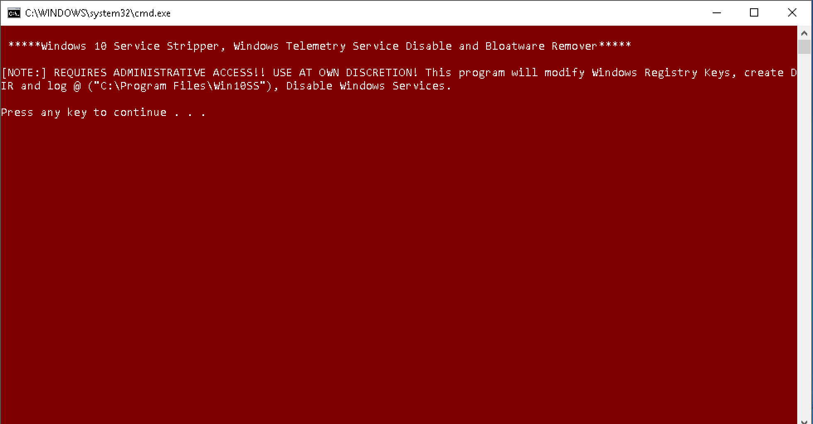
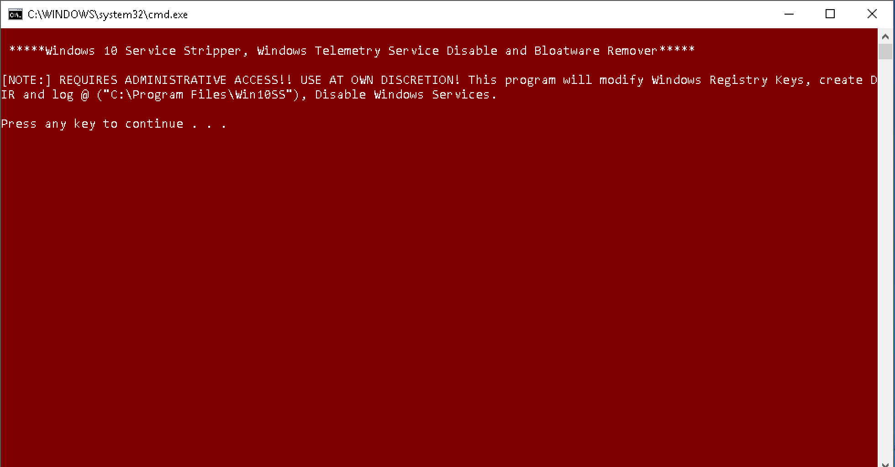

PassMaker Secure Password Generator
PassMaker comes in two flavors. PassMaker and PassMaker-DW.
PassMaker-DW is a Diceware passphrase generator built on The EFFs large list of passphrases. According to the most recent password security research, 6 consecutive random words are the most secure way to create a password, because it turns out humans aren't that good at making unpredicable decisions. PassMaker-DW uses Diceware Theory. It uses randomly generated numbers, similar to a dice roll to generate a key (11111-66666) and value (associated phrase) to create a unique secure passphrase.
PassMaker is a generator for basic common passwords including basic requirements (capital letters, special characters and numbers).
OpenSpotify, Safari Extension
Enables users to click on spotify links systemwide that open in Spotify Desktop Client.
Windows 10 Service Stripper
 

Windows Service Stripper is a BAT I use after new installations of Windows 10. This BAT disables unwanted services, telemetry (Enterprise V. Only), removes app packages (xbox, windows store etc.) and enables GODMODE. Full list in README.
WSS opens in a CMD window and allows users to choose from a variety of options. Each option will be logged with date and time stamp to log file created by the BAT so a user can see the applications last run. Each option is entered by the user step-by-step and can be quit out of at each pause.
TMUX Confuration File

My personal TMUX, terminal multiplexer, configuration file. Simple, flat, and minimalist white and gray panes. The status bar moved to the top mimicking MacOS, mouse features turned on, and slight changes to active and inactive panes.